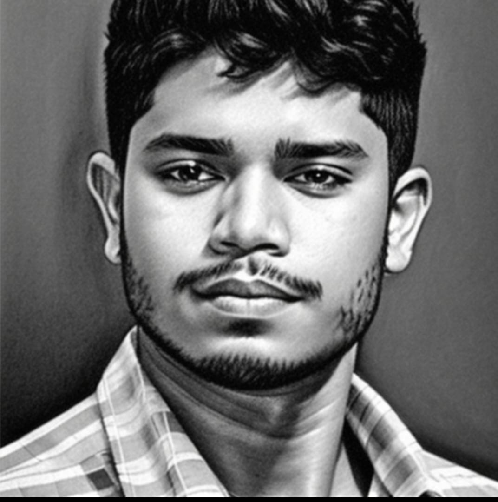

RAJYAVARDHAN VADDINENI

Summary
Vaddineni Venkata Sai Lakshmi Rajyavardhan| Student | Computer
and Audio Enthusiast.
Education
- Sree Vidyanikethan Engineering College
Bachelor of Technology - BTech, Artificial Intelligence · (October 2022 - May
2026)
- Sri Chaitanya College of Education
High School Diploma, Science · (June 2020 - March 2022)
Experience
IBM
Student at IBM Innovation Center for Education (ICE)
February 2023 - Present (1 year 2 months)
Skills
- Project Management
- Python (Programming Language)
- Analytical Skills
Certifications
- Fundamentals of Accounting
Capstone
- Building Your Leadership Skills
- Introduction to Hardware and
Operating Systems
- Probability & Statistics for Machine
Learning & Data Science
- Microeconomics Principles
Others